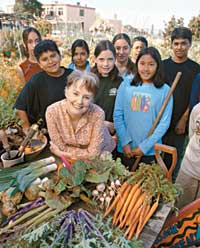
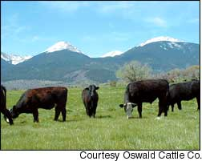

School lunch is a serious matter for Alice Waters, a California chef, restaurateur and a longtime organic food advocate. In her newest school initiative, Waters has convinced the Berkeley Unified School District to include food as part of its academic curriculum for all students - kindergarten through 12th grade. Across the country, other advocates of fresh, locally grown and organic foods are following Waters’ lead and are working to improve their school lunches, too.
“I hope to reach every single child,” Waters told Mother Earth News about her newest California effort. “Because we’re talking not only about the health of our young people, but about our environment and culture here ... [The way we’re living - farming and eating - now] we are not only destroying our agriculture, but our culture.”
In July, Waters signed a contract with the Berkeley Unified School District to fund the curriculum effort through her Chez Panisse Foundation. Chez Panisse is the name of Waters’ Berkeley restaurant; she started the foundation in 1996 to help fund an “Edible Schoolyard” initiative at Berkeley’s Martin Luther King Jr. Middle School. Since then, her foundation has supported many other California projects that involve young people in growing, cooking and eating together.
The district-wide curriculum program is an outgrowth of the Edible Schoolyard effort, and next fall, the same middle school will be the first to implement the new curriculum. “We are going to take school lunch out of the fast food market and put it into academia,” Waters says. “We want to teach students about the consequences of the decisions they make about food, their relation to the land; we want to instill basic values. What we are doing is creating a new way of thinking about food. Making food an academic subject will give it legitimacy.”
By 2007, the new program will expand to two elementary schools, and by 2014, every school in the district will have its own garden and a new cafeteria serving locally produced, fresh, organic food. The interactive curriculum will teach 10,000 students about gardening and cooking, and food in relation to history, geography, even drama and language arts.
Waters also has been instrumental in setting up the Sustainable Food Project at Yale University in New Haven, Conn. The organic menu served at one residential hall was so popular among the students last year that the university’s dining services decided to expand the program to the rest of the residential halls this year.
“The program at Yale is the talk of colleges,” Waters says. Many other universities and colleges, including Oberlin, Middlebury and Stanford, are now serving local and organic food at their residential dining halls.
Other California public school districts with organic lunch programs include Santa Monica and Palo Alto. In San Francisco, a private agency offers healthy alternative bag lunches to students in kindergarten through 8th grade.
In Washington, all Olympia grade schools have an organic salad bar, while the Seattle school board has prohibited the sale of all junk food and is working to phase out contracts with carbonated-beverage vendors for “exclusive pouring rights.” The New Jersey state assembly is considering a ban on junk food in schools that would require all vending machines to have whole-grain products, milk, juice and water by 2007.
In 2003, in response to growing interest in healthier school lunches, New Hampshire-based organic yogurt company Stonyfield Farm started a “Menu for Change” vending machine program, which includes organic juices, snacks and their yogurt products. To date, about a dozen machines have been placed in schools in four states (California, Connecticut, Massachusetts and Rhode Island) - and a 600-school waiting list continues to grow. “We are not in the vending business, so we didn’t solicit anyone for this,” says Carmelle Druchniak, a Stonyfield spokeswoman. “The demand was an eye-opener.”
For more information on Waters’ school initiatives, visit www.chezpanissefoundation.org or www.edibleschoolyard.org.- Umut Newbury
A safer, healthier alternative to factory-farm meats is emerging: the back-to-the-pasture movement. In September, more than 650 ranchers and 1,400 consumers converged in Montgomery, Ala., to take part in GrazeFest Alabama, the first national celebration of the back-to-the-pasture movement. The turnout showed that pasture-based ranching is being rediscovered by farmers and consumers; four years ago, fewer than 100 ranchers were selling grass-fed products directly to the public. Today, more than 2,000 are in the business, and demand continues to exceed supply.
Pasture-based ranchers raise their animals on grass and stored forage. They do not ship their animals to feedlots, treat them with antibiotics or hormones, or speed up their growth by feeding them grain - organic or otherwise. The animals are never given byproducts of any kind, so there is virtually no risk of mad cow disease.
That’s in contrast to large factory farms, where raising livestock in confinement stresses the animals; pollutes the air, soil and waterways; increases the risk of food-borne illness; raises the specter of mad cow disease and has resulted in the widespread and unnecessary use of antibiotics and growth hormones. Meat labeled “USDA Choice” is no longer the choice of millions of consumers who care about their health, the welfare of animals, the environment and the survival of small family farms.
The first day of GrazeFest was a “school day” for the ranchers, who came from as far away as California and Maine to learn more about the art and science of raising animals on pasture. During the daylong session, the ranchers heard information from animal scientists, grass-farming specialists and fellow ranchers. Tilak Dhiman, an associate professor of dairy nutrition at Utah State University, presented research about the nutritional benefits of grass-fed meat and dairy products. Compared with conventional products, Dhiman said, grass-fed products are lower in artery-clogging fats but higher in beneficial nutrients, including antioxidant vitamins, polyunsaturated fat, omega-3 fatty acids and the cancer-fighting fat CLA.
On the second day, work turned into play and the gates were open to the public. With live country music in the background, convention participants and visitors grazed their way through grass-fed steak, lamb chops, sausages and roasts, and indulged in homestead cheeses, butter and ice cream. Many were tasting grass-fed products for the first time; comments ranged from: “This tastes ‘cleaner’ than ordinary meat,” and “I’d forgotten how good beef could taste,” to “Wow. This lamb is really tender.”
A friendly competition between four “pit masters,” the Southern term for a barbecue master, featured heritage pig breeds, including Duroc, Gloucestershire Old Spots and Tamworth, which thrive on pasture and were common before confinement farming.
For more information on grass-based production, check out The Stockman Grass Farmer magazine, www.stockmangrassfarmer.com.- Jo Robinson
Jo Robinson was one of the featured speakers at the recent Grazefest. Her Web site, www.eatwild.com, is a clearinghouse for information about raising animals on grass. To order her book, Pasture Perfect, go to www.MotherEarthNews.com or call (866) 803-7096.
GE Grass Pollen Drift Measured
Pollen from genetically engineered (GE) grass plants can drift up to 13 miles, according to a new study published by the National Academy of Sciences (NAS). The study tested pollen drift from a GE bentgrass (used on many golf courses) developed by Monsanto and Scotts to resist an herbicide. An earlier, one-tenth of an acre “testette” by the companies suggested the pollen would drift 1,400 feet, but the 400-acre test published by the NAS confirmed the GE pollen drifted for miles. Critics warn that such movement of GE pollen could create superweeds, displace native species and threaten organic crop purity.
The State of Renewables
The solar industry is booming, growing 30 percent per year according to the Solar Industries Association. In the absence of strong federal incentives, states are promoting renewable options. For example, the New York State Public Service Commission adopted a new policy in September, requiring 25 percent of the state’s electricity be supplied from renewable energy sources by 2013. The new program will include incentives for both large facilities that draw on wind, biomass and ocean or tidal wave energy sources, and small-scale fuel cells, solar electric systems and wind turbines.
EVs Return Home to Norway
Ford has shipped its fleet of Th!nk electric vehicles (EV) back to Norway instead of crushing them, thanks to the efforts of environmental organizations including Global Exchange, Greenpeace and Rainforest Action Network. The auto manufacturer planned to destroy the 300 fully functional, Norwegian-produced cars last summer, quoting a U.S. government requirement, when the groups began holding simultaneous protests at the company’s European and U.S. headquarters. Torhild Skogsholm, Norway’s transportation minister, who made a direct appeal to Ford, says a great demand exists for the cars in Norway, where “they can contribute to cleaner air and less pollution in our cities.”
|
 Organic food advocate Alice Waters is convincing schools to make the topic of food and how we grow it a formal part of academic coursework in public schools. |
 |
|